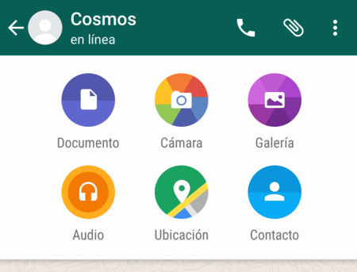
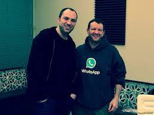

WhatsApp va néixer el 2009 i inicialment no va ser concebuda com un servei de missatgeria. En un primer moment el servei se centrava en els estats, en poder informar els contactes si estàvem disponibles per a una conversa o si estàvem ocupats.
La comunicació, en aquell moment, es feia a través de SMS. Amb el pas del temps l'app ha anat evolucionant i avui dia, encara que segueixen presents, els estats no tenen un paper gairebé rellevant. WhatsApp ha deixat pràcticament obsolets els SMS i ha aconseguit que les videotrucades siguin més populars que mai.
Les últimes estadístiques de WhatsApp que daten del quart trimestre del 2019 van registrar que l'aplicació comptava amb 2.000 milions d'usuaris actius mensuals a 180 països. En comparació, l'abril del 2013 el servei tenia 200 milions d'usuaris, un creixement desbordant en menys de set anys. Aquestes últimes xifres col·loquen WhatsApp al lloc número u en un rànquing d'aplicacions de missatgeria global per sobre de Facebook Messenger.
Versió 2.23.22.27.


És una aplicació de xat per a telèfons mòbils d'última generació, els anomenats smartphones. S'utilitza per enviar missatges de text i multimèdia entre els usuaris. És semblant als programes de missatgeria instantània per a ordinador, encara que enfocat i adaptat al mòbil.
A WhatsApp es pot compartir fitxers multimèdia, documents, ubicacions o contactes. Inclou gifs animats i stickers.
Es fa a través d'un servei de pagament d'atenció al client, on les grans empreses paguen a Whatsapp per comunicar-se i registrar les sol·licitacions i reclamacions dels seus clients.
Meta va realitzar dues inversions més al 2020 per consolidar WhatsApp. Va gastar 5.700 milions en la compra de la compañía India de solucions digitals Jio Plattforms i 1.000 milions més a Kustomer, una empresa especialitzada en comerç electrònic. L'objectiu, segons experts, comptar amb tot l'entorn tecnològic necessari perquè WhatsApp passi a funcionar com a centre de transaccions i generar més guanys.
L'actual amo de WhatsApp és Meta, va comprar WhastsApp per 19.000 milions de dòlars a l'any 2014.
Jan Koum és el creador de WhatsApp i la persona que va tenir la idea originalment, a qui després se li uniria Brian Acton a la carrera per fer popular la seva app en un moment en què les aplicacions mòbils estaven fent encara els seus primers passos.
Facebook Messenger
Es va crear al 2008 com un xat intern de Facebook. Al 2010 canvia el seu nom de Facebook Xat a l’actual i es va llançar com a aplicació independent. Permet crear xarxes professionals, compartir arxius o contingut multimèdia i fer trucades.
Va ser fundada al 2011 i compta amb 650 milions d'usuaris. L'aplicació més utilitzada a Xina. Inclou un "mur" social on es comparteix tot tipus de continguts i permetre realitzar transmissions en viu, enviament d'imatges, vídeos, videojocs, trucades de vídeo i trucades de conferència.
Signal
És una aplicació menys utilitzada. Es centra en oferir la màxima privadesa. Signal utilitza un protocol de xifrat Open Whispers Systems d'extrem a extrem, per a totes les comunicacions, això significa que els missatges surten del mòbil ja xifrats, i només es desxifren quan arriben al mòbil del receptor. Un xifrat tan popular que la mateixa WhatsApp va decidir utilitzar-lo.
Compartir contingut multimèdia temporal a través d’ estats
Permet fer una videotrucada entre 8 usuaris diferents
Permet realitzar trucades gratuïtes
Base d’usuaris formadas per 2.000 milions de persones
Costa mantenir la qualitat de resolució en imatges i vídeos.
Còpia de seguretat per guardar els nostres missatges
Per al seu ús és necessari una sim
Una conversa normal es pot quedar al núvol
No es poden enviar fotos o vídeos molt pesats
Passada 1 hora no deixa esborrar un missatge